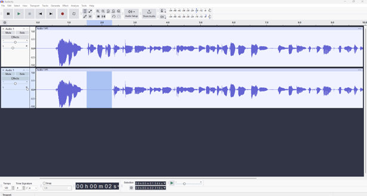

Chapter 6 Audio-Visual data
Audio-visual data includes various forms of multimedia content, such as videos, movies, and audio recordings, including voices and visual components. In research, these forms of data capture interviews, workshops and any other form of communication with research participants involving their voices and/or images. Anonymizing these types of data involves modifying the audio, video or images, which will be introduced in this section.
6.1 Voice transformation/distortion
This technique involves disguising voices such as altering the pitch in a recording. Keep in mind that transforming or distorting the voice can reduce the usefulness of the data. Therefore, the decision of modifying sounds should be made based on your research objectives.
6.2 Blurring, pixelation or obscuring
Blurring by pixelating specific regions of a video image or a picture, such as faces, can effectively anonymize individuals. This technique involves reducing the level of detail in those areas, making it harder to identify the person. In addition, you can also obscure the face of a person. See Image XX for an example of pixelating a face.

Simpel distortion of the audio or imagery can only prevent idetnfication based on the speaker’s voice or iamge but it cannot remove other idetnfiying information that might exist in the recoding, such as speaking patterns or the mentioned personal information.
6.3 Mute or bleep out the identifying information
In audio or video recordings, you can also mute or bleep out identifying information to anonymize the audio-visual data. For example, you can mute or bleep out identifiers such as names, places or other information. Please see image XX below where the personal name has been muted in the audio recording.
Software for audio-visual data
• For audio data, audio editing software such as Audacity can be used to transform or distort the voice or bleep out personal information.
• Different video editing software such as Adobe Premiere can be used to blur or pixelate video recordings or transform, distort or bleep out information in the audio recording.
• For images, image editor tools such as Photoshop and Paint can be used to blur, pixelate or obscure faces or personal information in pictures and images.